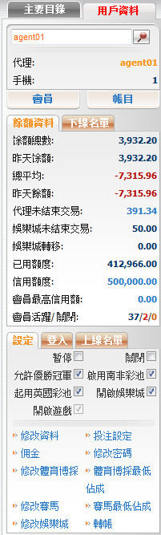

概述
定義:
賬號信息的目的是幫助總代理查看及管理所有下線的設定。此功能分為三個主要部分:

帳號信息
客戶信息
在這個部分, 您可查看關於您自己及所有下線的詳細信息, 包括: 名字, 聯絡方式, 下線名單, 賬目及日誌。 請查閱客戶信息指引以了解詳情。

客戶信息
餘額資料
在這個部分, 您可查看關於您下線的餘額信息, 此外這也支持修改信用額度,會員最高信用額度或您也可根據昨日餘額与直屬下線進行轉賬。 請查閱餘額資料指引以了解詳情。

餘額資料
賬號設定
在這個部分, 您可查看及修改所有下線的設定。請查閱賬號設定指引以了解詳情。

帳號設定